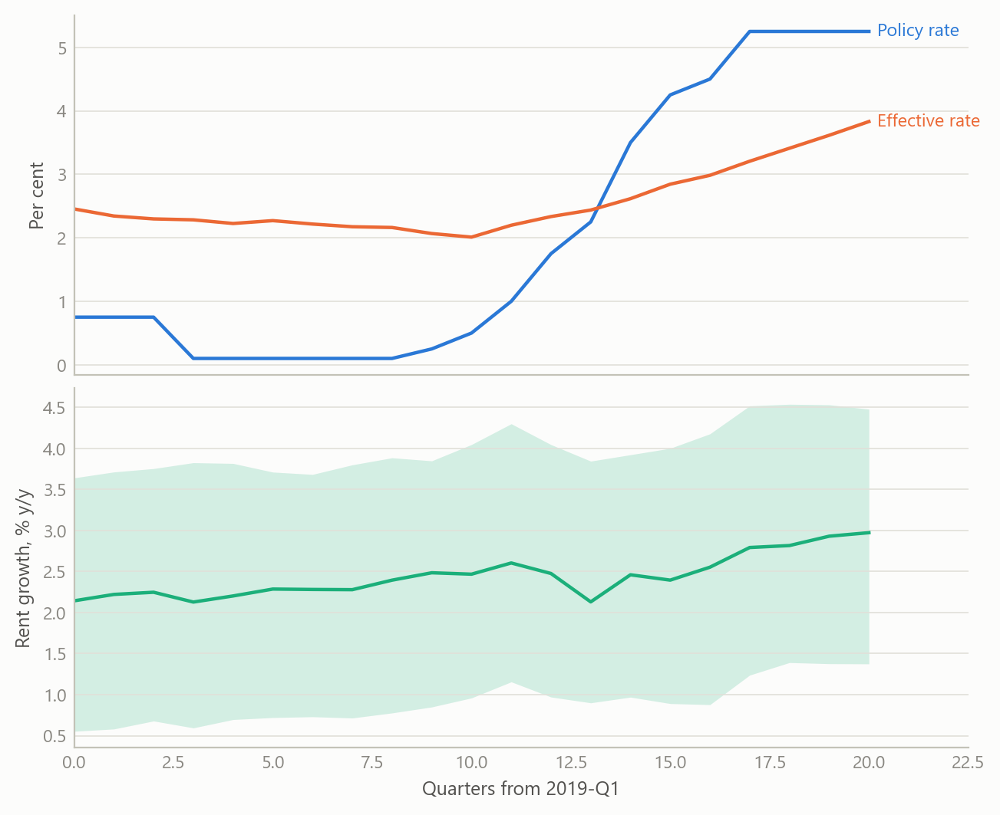
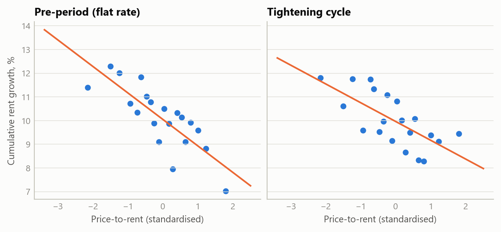
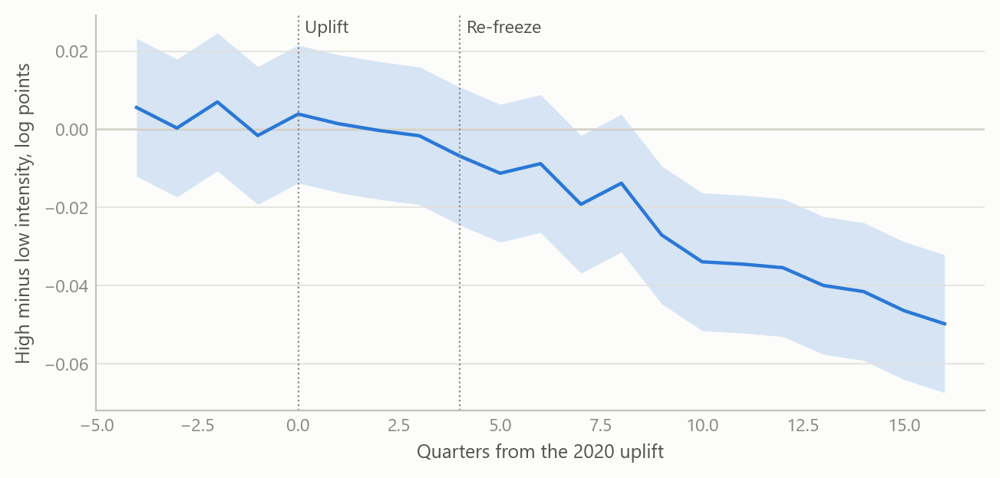

A quarterly panel of every English local authority
One consistent dataset for testing what housing benefit and the 2021–24 rate rises did to private rents
Policy research
How a 290-authority quarterly panel of housing, benefit and labour-market statistics was built, and the two quasi-experimental questions it was built to answer.
The question
Between 2021 and 2024 the Bank of England raised its policy rate from 0.1% to 5.25%. Over the same years private rents rose fast, and a frequent claim in the policy debate was that landlords were simply passing higher mortgage costs on to tenants. Over the same years the cash value of housing support for private renters (the Local Housing Allowance) was frozen, then partly restored, then frozen again. Both stories matter for policy, and both are hard to test with national totals: rents, rates, inflation and benefit policy all move together in time, so a single national series cannot say which one is doing the work.
Areas, however, differ. They differ in how expensive housing is relative to rents, and in how many tenants depend on benefit. If a policy or a shock acts through one of those differences, rents should respond differently in the areas that have more of it. That is the logic of a quasi-experiment, and it needs one thing before anything else: a clean, comparable, quarterly dataset covering every authority, over a window that includes the events of interest. This project built that dataset and used it for two studies.
Approach
The panel
The panel covers all 290 local authorities in England, quarterly, from the first quarter of 2019 to the first quarter of 2024. That is 21 quarters and 6,090 authority-quarter observations in the headline sample. It combines three kinds of official statistics:
- Housing. Median private rents for two-bedroom homes, house prices, and the rental-market areas used to set benefit rates.
- Benefits. Housing benefit and Universal Credit caseloads in the private rented sector, expressed as a share of the private rental stock. This is “benefit intensity”.
- Labour market. The claimant count and the 10th-percentile wage, used as time-varying controls. The low-paid wage is the relevant outside option for the tenants who depend on benefit.
Most of the work is unglamorous and decisive. Boundaries change, so every source had to be mapped to a single set of authority codes. Rents are published on a different geography from the one on which benefits are administered, so a crosswalk was needed. The official private-rent series changed methodology during the window, so the analysis window was locked at early 2024 rather than splicing across the break, and an extension is treated as optional until an overlap check has been done. The set of 290 authorities was locked once, so both studies use the same sample.
Two predetermined exposures
The key design choice is to measure how exposed an area is before the events, so that exposure cannot respond to them.
- Interest sensitivity. The 2019 ratio of average house price to annual rent, standardised across authorities. Where prices are high relative to rents, a given rise in financing cost eats a larger share of rental income, so a landlord restoring a target yield would have to raise rents by more. Under full cost-plus pass-through the required percentage rent rise is proportional to this ratio.
- Benefit intensity. The pre-period share of private rented homes with a benefit claimant. It averages 4.4% across authorities and exceeds 8% in the top decile, concentrated in coastal towns, post-industrial districts and a few inner-London boroughs.
The estimating design
Both studies use the same skeleton. The outcome is year-on-year rent growth. The regressor of interest is the exposure interacted with the event: the change in the rate for the first study, the 2021 benefit re-freeze for the second. Authority fixed effects remove each area’s own average growth, and region-by-quarter fixed effects remove everything common to a region in a given quarter, including every nationwide shock. What is left is the question that matters: among authorities in the same region and quarter, did the more exposed ones diverge as the event unfolded? Standard errors are clustered by authority.
For the rate study the treatment is not Bank Rate but the effective rate on the outstanding stock of mortgages, which is what landlords with existing fixed-term debt actually pay. It rose far more slowly, from about 2.05% in 2021 to about 3.8% by early 2024. The specification, its placebo window and a distributed-lag variant were fixed before any estimation on real data.
What the work shows
Rate pass-through: a bounded null
The central estimate for the rate study is essentially zero. The interaction coefficient is −0.00013 with a p-value of 0.9835: more interest-sensitive areas did not see faster rent growth as financing costs rose. A null only matters if it excludes something, so the study calibrates what it excludes. The largest differential effect the design could plausibly have missed is about 0.59% of cumulative rent growth per standard deviation of interest sensitivity, while full cost-plus pass-through, over a range of plausible loan-to-value ratios, mortgaged shares and a tax amplifier for individual landlords, would require 2.8% to 5.0%. The data therefore rule out roughly four-fifths of frictionless pass-through through this channel.
Two checks make the null credible rather than empty. First, results are uniformly small and insignificant across alternative rate measures, transformations, lag structures and samples. Second, a raw cross-section tells a seemingly opposite story: more interest-sensitive areas had slower rent growth over the cycle. A true pre-period with a flat policy rate shows the same gradient, and a steeper one (0.01328 before, 0.00887 during, both negative). It is a long-running convergence of cheaper areas catching up, not a monetary effect, and it is exactly what the authority fixed effects absorb. One placebo window did fail, and the work reports it with its diagnosed cause, the 2020–21 pandemic reshuffling of London and the South East, rather than dropping it.

Benefit incidence: a consistent direction
The second study treats the benefit freeze as a natural experiment. Housing support is meant to reach the 30th percentile of local rents. It is reset to that level at each uplift and then held in cash terms, so during the 2021–24 re-freeze it fell steadily behind a market whose lower tail was growing at close to five per cent a year. If the allowance acts as a floor under rents in the benefit-dependent part of the market, areas with more claimants should see rent growth slow once the floor stopped rising. The 2020 uplift is the mirror-image test, but it landed in a soft pandemic market and is a weak one.
Across 23 specifications varying the window, spatial controls, bedroom mix and treatment of outliers, every estimate of the re-freeze effect is negative, with no sign reversals. The specifications share one cross-section, so this reads as robustness of the sign, not as 23 independent tests. The baseline estimate is small and imprecise (−0.0174, p = 0.142), which is the expected signature when sitting tenants and reluctance to cut rents bias the estimate towards zero. The better-powered window, which uses the uplift period as the baseline, gives −0.0498 (p = 0.0033). Excluding the top decile of authorities by net in-migration leaves the sign unchanged, so the pattern is not just people moving.

Insights
- Exposure must be fixed before the event. Both studies use 2018–19 values, so an area’s position cannot be a response to the rate path or the freeze. Most of the credibility is bought there, at no cost in data.
- A null needs a yardstick. “No significant effect” says little. Converting it to economic units and comparing it with what the theory predicts turns it into a statement about what has been excluded.
- Show the confound before the reader does. The negative cross-sectional gradient looks like a perverse channel until a pre-period shows it was already there. Putting that in the paper turns the strongest objection into the best argument for the design.
- Treat the treatment variable as a finding. Policy rates and the rate landlords actually pay diverged for years. Choosing the wrong one would have overstated the shock.
- Read two results together. Rate pass-through through landlords’ financing costs looks small, while the frozen benefit floor appears to bind. Together they suggest the pressure sat on the tenant side of the market, and that monetary and fiscal policy were pulling in different directions.
Scope and next steps
The panel is built to test whether areas more exposed, measured before the events, saw different rent and benefit outcomes as interest rates rose and housing support was frozen.
The natural extensions are three. First, a replication once mortgage-rate transmission is complete, since fixed-rate deals and tenancies reprice slowly. Second, a household- or landlord-level incidence design, to see the mechanisms an area panel averages over. Third, a sharper reading of the size of the benefit effects across specifications, whose direction is already robust.
About the evidence
The panel and both studies are real: 290 authorities, 21 quarters, official statistics, built between 2024 and 2026 during a period of independent research. The figures here are simulated from the same structure (authorities, quarters, exposures, event timing) and illustrate the design only. The estimates in the text are the project’s own results.
Figures and tables marked simulated are generated from simulated data built to share the structure of the analysis (its variables, horizons and frequencies). They show how each method works and what its output looks like. Results stated in the text, and figures that give a source, are the project’s own. Methods are described at the level of a methods section. Code and data pipelines are not reproduced here.